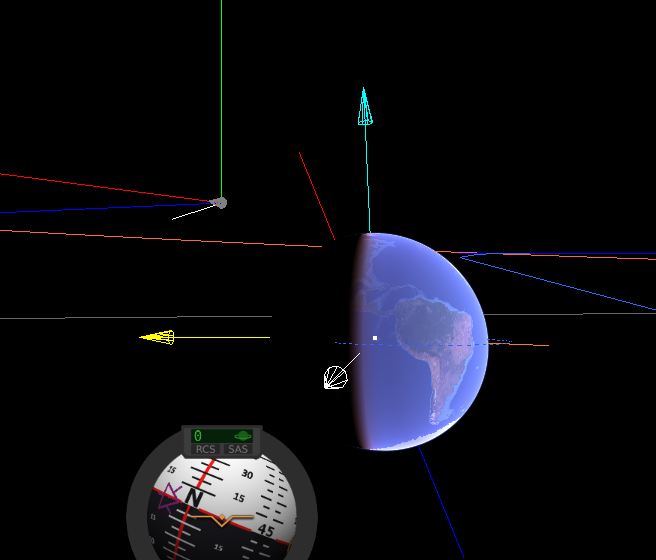
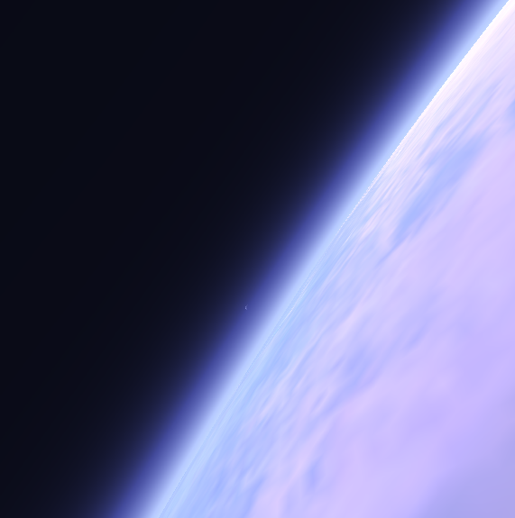
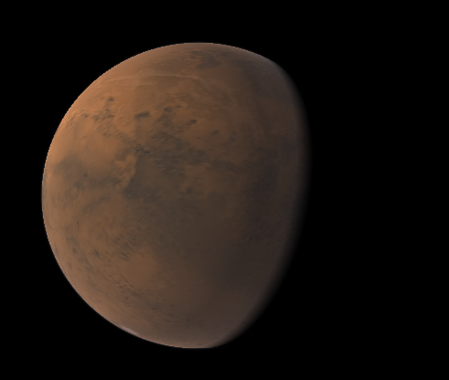

OSPGL (OSP + OpenGL) is an ongoing attempt at creating a game similar to Squad's Kerbal Space Program, focusing on perfomance and moddability. It's written in C++, and uses OpenGL for rendering.
It will feature a gameplay similar to KSP, but probably becoming harder (N-body physics) and more realistic.
Engine
I don't know if OSP could be said to run "on an engine", it instead is built "alongside" a framework containing lots of utility code. It doesn't really make sense to clone one of the known game engines (Unity, Unreal) when the game is so special, so, instead of writing an engine and then the game, I have decided to write the game, and when some code can be shared, I will write an utility class for it. A big problem is code organization, but the project will see some progress on this area over time, for now code files are placed on a folder structure that makes little sense.
As the game grows more and more complete, gameplay code will start to be written in lua. Only then will the code be considered a game engine for the lua written gameplay. For now lua is used only for planet generation, but this will change in the future.
Progress so far
The game features multiple systems:
Asset Manager
The asset manager simplifies the loading, decoding and unloading of Assets from packages.
A package is any folder inside the ''./res'' folder which contains a ''package.toml'' inside. Packages can define metadata alongside dependencies, allowing mod developers to easily implement their code and assets into the game.
So far four packages exist, "core", "navball", "rss" and "rss_textures". Every package is neccesary for the game to run as it's in very early development, but they showcase some of the cool features that the package system implements.
A package folder is a "base" name for any package that "implements" it. For example, any package could go into
the navball folder, so modders could easily change the navball.
To "implement" a folder you simply set folder="wathever" on the package.toml file
core, the basic assets required to run the game, depends on this navball package. This allows a navball modder
to change the navball without changing the core package.
More will be written on this subsystem as it's developed, here's an example of the current package.toml for core:
id = "core"
name = "OSP Core"
description = "All files needed to run the most bare-bones OSP"
author = "Tatjam"
version = "0.0.1"
dependencies = ["navball"]
Planet Renderer
I have been writing this for many months now, it has been rewritten from my first attempt which failed due to perfomance reasons.
The new planetary renderer is pretty fast, using lua to source the planet geometry (instead of the node system in the failed attempt), and generating tiles on non-main threads. It still requires some work to hide the occasional gaps that appear, but it works pretty good, even on my low-end GPU.
To subdivide the planet six quad trees are used, one for each side of a cube (which is then mapped to a sphere, a CubeSphere!). The planet tile server then obtains leaf nodes from these quad trees and gives the worker threads the order to start generating the vertices.
This seemingly simple task proved itself to be actually quite complicated.
Another big challenge was rendering the generated triangles, GPUs are not really meant to work with doubles, so some hacks have to be done in order to get the planet looking nice on the screen. I decided to implement a logarithmic depth-buffer, as detailed by the guys behind Outerra.
Everything is kept as doubles in the engine, and the data gets converted to floats when sent to the GPU. We keep the camera at the origin so precision issues are hard to notice (you have to set the FoV really small and only then you will see some Z-fighting on far away planets).
The atmospheric shader is written out of frustration with the bad perfomance of other shaders, it may change in the future but it looks quite good, and performs really fast compared to other solutions. It's sadly not physically accurate at all.
Physics
Physics are just starting to take shape, so far I have implemented keplerian orbits for the solar system planets, and an N-body integrator for vessels. The combination works pretty good, and performs decently, but I don't know if it will prove itself.
Vessel physics are the current development target, I'm using bullet3 compiled to use doubles instead of floats, allowing the
physics engine to run very far from the origin (Up to around 200AU), while moving really fast (100 thousand m/s and upwards work perfectly).
This means that we won't need any "Krakensbane" or similar. Oh, the good parts of rolling your own engine!
I guess that that's about it for the introduction, more blog posts while come as stuff gets developed. I will try to keep this updated whenever something significant happens!
Some screenshots:
A view of the Earth from space, with a lot of debug stuff visible, and part of the navball on the bottom.
The velocity is 0 as the reference frame is set to "Earth-Rotating" and the vessel is on a geostationary orbit.

A view high on the Earth's atmosphere, the Moon is visible. 
A view of Mars from space, you can see its thin atmosphere. 